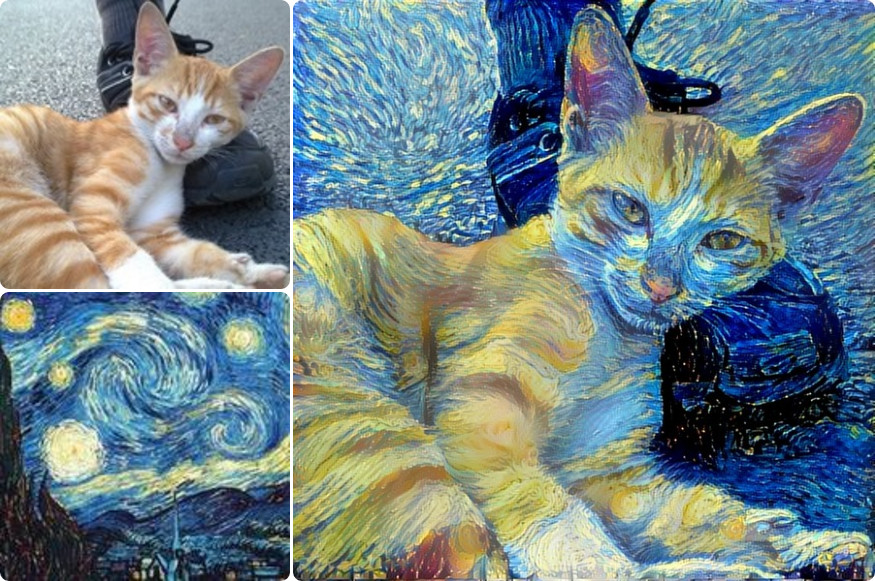

Neural Style 使用教程
Neural Style( 读作: 牛肉style ) 是一款基于神经网络的智能图像合成软件。
输入一张内容图和一张材质图，Neural Style就能将两个图像混合成一个几乎完美的画作。图像合成网站Ostagram的后台就是由Neural Style驱动。

系统要求
Neural Style目前只支持Linux系统，但Windows 10用户也可以通过系统自带的Linux子系统安装
Linux子系统安装教程
其他版本的Windows或OSX用户则需要借助虚拟机安装Linux
安装使用
版权说明
我并不是Neural Style的作者，只是做了一个Web服务器以方便使用。
其中使用的技术都是开源和公开发表的：
显卡加速
默认安装使用CPU渲染图像，速度非常慢。通过Nvidia显卡加速可以获得几十倍的提速。目前教程还在编写和测试中，很快会有更新。。。
另外教程的其他各部分也在不断完善中，如果需要的话可以关注我的微博来获取更新的消息。